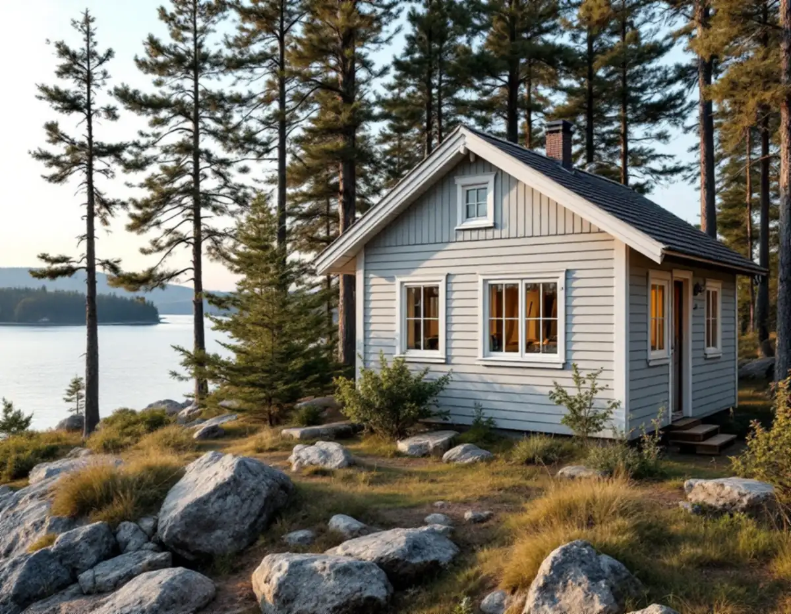
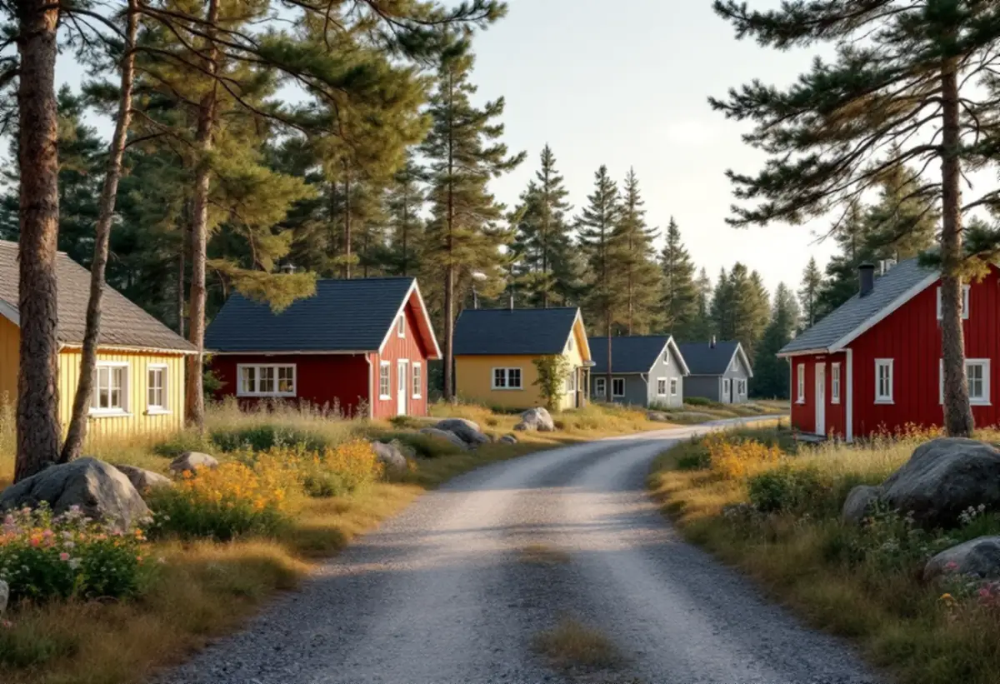

Platsbesök
Skrapprov på flera sidor av huset för att se vilka färgtyper som sitter på.

På Brevikshalvön står många hus som byggdes för sommaren och som i dag är helårsbostäder.
Beskriv jobbet kort.
Något blev fel. Kontrollera uppgifterna eller ring 08 12 410 276.
Vi tittar på jobbet på plats innan du får offert.
Du ser vad som ingår och vad det kostar.
Vi drar av ROT direkt och sköter ansökan.
Geal Entreprenad AB, Bromma. Org.nr 559303-7566.
Fasaden kan ha målats om flera gånger, med olika sorters färg. Geal Entreprenad AB målar om fasader i hela Tyresö och tar först reda på vad som sitter på väggen innan den nya färgen väljs.
Kommunens strategi för Östra Tyresö berättar att de första sommarvillorna byggdes runt Breviksmaren för drygt hundra år sedan. Under 1930–50-talen tog omvandlingen av hela östra Tyresö fart på allvar, och mängder av tomter styckades av och bebyggdes med fritidshus. Fritidshus från 1930-, 40-, 50- och 60-talen breder enligt strategin ut sig över stora områden i Östra Tyresös norra delar och på Brevikshalvön.
Efter hand började allt fler bo kvar året runt. De gamla avstycknings- och byggnadsplanerna gav mycket små byggrätter, men permanentbosättningen har ändå fortsatt att öka. I dag bor ungefär 3 300 personer i Östra Tyresö, varav omkring 2 400 i Brevik. Breviksnäs vid Breviksmaren, som bebyggdes med större sommarnöjen kring förra sekelskiftet, och Ällmora fritidshusområde pekas i strategin ut som värdefulla kulturmiljöer.

Riksantikvarieämbetet skriver i förordet till sin handbok om byggnadsmåleri att linoljefärg, slamfärg och kalkfärg ännu på 1950-talet hörde till de vanligaste färgerna, både vid nymålning och ommålning. Fabriksblandad linoljefärg fanns från 1930-talet. Ett fritidshus från den tiden kan alltså ha fått linoljefärg eller rödfärg från början och senare en eller flera moderna färger ovanpå.
Boverket beskriver vad som hände när träpaneler började målas med tät plastfärg. Akrylatfärg kräver en grundfärg av alkydolja, och där den grunden saknades fuktades panelen upp kraftigt av regn, med fuktskador som följd. Enligt Länsstyrelsernas blad om målning utomhus på trä visar sig plastfärg och alkydoljefärg ofta genom flagor, sprickor eller blåsor. Vi gör därför skrapprov på flera sidor av huset och tittar extra noga där färgen har släppt.
Vill du gå tillbaka till linoljefärg på ett hus med plastfärg ytterst går det inte att måla rakt över. Plastfärg förenas inte med underlaget utan bildar en hinna ovanpå, och enligt Länsstyrelsernas blad måste den hinnan tas bort först. Bäst är att handskrapa med en vass skrapa. Sitter plastfärgen ovanpå äldre linoljefärg kan infravärme användas, eftersom oljefärgen under mjuknar så att plastfärgen går att skrapa av, men arbetet innebär viss brandrisk. Kemiska medel bör undvikas, eftersom de lätt skadar träet.
Blästring och maskinslipning skadar träet, skriver bladet, och högtryckstvätt pressar in vatten i väggen. Riksantikvarieämbetet kallar sandblästring av träfasader olämplig, eftersom underlaget lätt skadas. Bladet påminner också om att partier där färgen sitter bra gärna kan sparas. Vi går igenom med dig vilka väggar som behöver skrapas ner till trä och var det räcker att tvätta, skrapa bort lös färg och måla om med samma färgtyp.
Tyresö kommun skriver att du inte behöver bygglov inom detaljplan för att måla om ett en- eller tvåbostadshus, en komplementbyggnad eller ett komplementbostadshus. För kulturhistoriskt värdefulla byggnader gäller däremot utökad lovplikt. I detaljplanen kan det också finnas bestämmelser om vilka färger och fasadmaterial husen får ha. Planen för din fastighet hittar du i kommunens webbkarta, under planer och bestämmelser.
Östra Tyresö planläggs i etapper. Enligt strategin ska kulturmiljöns karaktär beskrivas i kommande detaljplaneetapper, och i områden med en tydlig karaktär kan särskilda bestämmelser införas, till exempel om fasadmaterial, typ av tak eller färgsättning. Den som målar om nu har därför nytta av att veta vilken etapp huset ligger i. Om rödfärgade hus och lov för ny kulör kan du läsa under målare i Tyresö, om timmer och panel under fasadrenovering i Tyresö och om målning i stort under målare.
Skrapprov på flera sidor av huset för att se vilka färgtyper som sitter på.
Vi tittar i detaljplanen om den har bestämmelser om kulör eller material.
Skrapning, färgtyp och antal strykningar står var för sig.
Plastfärg som släpper skrapas för hand, partier som sitter bra sparas.
Bart trä grundas och fasaden stryks i lämpligt väder.
Vi går runt huset med dig när sista strykningen har torkat.
Rotavdrag ges för arbete i både permanentbostad och fritidshus som du äger, och att måla fasader och sätta upp byggnadsställning räknas som rotarbete. Hyr du ut en del av huset ges inget avdrag för den delen, och bor någon annan permanent i ditt fritidshus räknas det enligt Skatteverket inte längre som ett fritidshus du kan använda.
Avdraget är högst 30 procent av arbetskostnaden, högst 50 000 kr per person och år och högst 75 000 kr tillsammans med rutavdrag. Färg, material och resor ger inget avdrag. Geal drar avdraget direkt på fakturan.
Hur många färglager som måste bort, om plastfärg ska skrapas ner till trä, hur mycket panel som behöver lagas och hur stort huset har blivit efter tillbyggnader väger tyngst. Efter ett gratis platsbesök får du ett skriftligt kostnadsförslag.
Fasad, fönster och invändig målning.
Målare i Stockholm →Takbyte, takbesiktning och plåtarbeten.
Takläggare i Tyresö →Solberga, Raksta och Brevik.
Takrenovering i Tyresö →VA-anslutning, vattenmätare och dagvatten.
Attefallshus i Tyresö →LTA-avlopp, källarbadrum och golvbrunn.
Badrumsrenovering i Tyresö →Startbesked, utstakning och slutbesked.
Byggföretag i Tyresö →Timmerhus, fritidshus och villor i Tyresö.
Fasadrenovering i Tyresö →Gamla bågar och beslag i Tyresö.
Fönsterbyte i Tyresö →Fritidshus som blivit permanentbostäder.
Fönsterrenovering i Tyresö →Fritidshus som byggts om till villor.
Golvläggare i Tyresö →Slipa och spara gamla brädgolv.
Golvslipning i Tyresö →Stugor som blir helårshus.
Köksrenovering i Tyresö →Rödfärgade hus, stugor och interiörer i Tyresö.
Målare i Tyresö →Stuprör, rännor och beslag i Tyresö.
Plåtslagare i Tyresö →Stugor, altaner och tillbyggnader.
Snickare i Tyresö →Nytt tak med säker väg till skorstenen.
Takbyte i Tyresö →Ny tapet i rum med eldstad.
Tapetsering i Tyresö →Byggrätten i omvandlingsområdena.
Tillbyggnad i Tyresö →Rivningsavfallet, arkivet och eldstaden.
Totalrenovering i Tyresö →Eller ring 08 12 410 276, mån–fre 08–17.
Beskriv jobbet kort.
Något blev fel. Kontrollera uppgifterna eller ring 08 12 410 276.